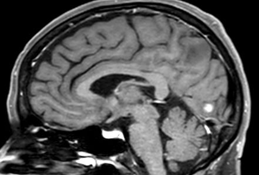

Transient Binocular Vision Loss

- Abrupt loss of vision in both eyes that lasts from seconds to hours
-
Causes:
- Migraine
- Transient ischemic attack
- Seizure
- Systemic hypertension or hypotension
- Papilledema
-
Migraine
Migraine
- Flickering zigzag (“fortification scotoma”) migrates across visual hemifield of both eyes for 20 to 30 minutes
- Visual aura often switches sides in successive attacks
-
Accompanying features
- Headache may follow visual symptoms or be absent (“acephalgic migraine,” “migraine equivalent”)
- Hemibody weakness and/or numbness or language difficulty may uncommonly occur, following each other (never concurrently!)
- First migraine attack usually occurs within first three decades of life, but…
-
Trap: First migraine attack may occur after age 50 (“late-life migraine”)
- Stationary blank spots or flickering lights (but no zigzags) lasting less than 2 minutes
- Diplopia, dizziness, dysphagia may occur in rare Bickerstaff variant

- Stationary and sometimes colored flickers of variable duration
- Head and eye deviation to one side sometimes
- Tonic-clonic Movements Sometimes
- Loss of consciousness (with secondary generalization)
- Structural abnormality usually evident in occipital lobe on brain imaging
- No distinctive accompanying features except headache
- Vision loss triggered by standing or sitting up
- History of vigorously treated hypertension
- Dehydration
- Lightheadedness (presyncope)
- Fainting (syncope)
- Vision loss lasting only seconds occurring spontaneously or triggered by standing or sitting up
- Patient report of “black outs” may mean loss of consciousness rather than loss of vision
-
Elicit features suggesting that vision loss was binocular
- Vision loss affected both eyes
- Vision loss affected a hemifield
- Vision loss persisted with either eye closed
- Elicit features that suggest migraine (See migraine, above)
- Perform ophthalmoscopy to rule out papilledema
- Measure blood pressure to rule out hypertension or hypotension
-
Refer promptly if symptom is recent for the following work-up
- Acute phase reactants
- Complete blood count, protein electrophoresis (for hypercoaguable state)
- Echocardiogram (for heart wall or valvular disease)
- Heart rhythm monitoring (for atrial fibrillation)
- MRI and MRA (for occipital mass lesions, recent stroke, and vasculopathy)
-
Migraine
- Preventive treatment usually not necessary
- Stopping smoking reduces risk of stroke
- Lowering dose of estrogen in birth control pills may reduce risk of stroke
-
Transient ischemic attack
- Diagnosis of atrial fibrillation most important to reduce stroke risk
- Standard stroke risk reduction measures must be instituted
-
Seizure
- Brain MRI usually shows pertinent structural abnormality
- Electroencephalography may show interictal abnormalities
-
Systemic hypertension
- Blood pressure must be controlled, but not excessively
-
Systemic hypotension
- Anti-hypertensive medication regimen may need modification
- Cardiac output must be optimized
- Hydration may be helpful
-
Papilledema
- Cause of elevated intracranial pressure must be sought